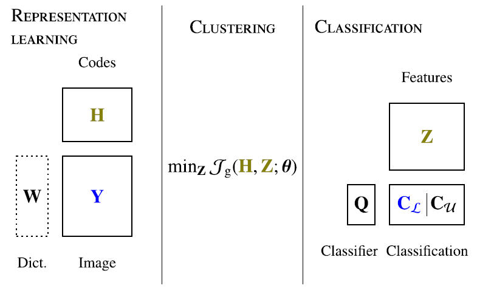
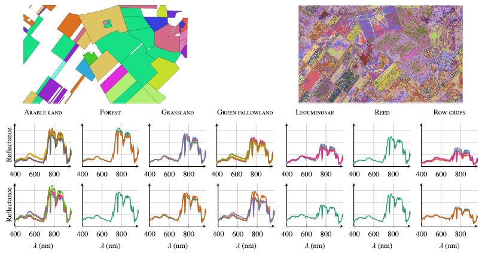

Matrix cofactorization for joint representation learning and supervised classification
Application to hyperspectral image analysis
Supervised classification and representation learning are two widely used classes of methods to analyze multivariate images. Although complementary, these methods have been scarcely
considered jointly in a hierarchical modeling. In this paper, a method coupling these two approaches is designed using a matrix cofactorization formulation. Each task is modeled
as a factorization matrix problem and a term relating both coding matrices is then introduced to drive an appropriate coupling. The link can be interpreted as a clustering
operation over the low-dimensional representation vectors. The attribution vectors of the clustering are then used as features vectors for the classification task, i.e.,
the coding vectors of the corresponding factorization problem. The structure of the cofactorization is depicted in Fig. 1. It can be interpreted as a deterministic counterpart
of the hierarchical Bayesian model described here.

Fig. 1. Structure of the cofactorization model. Variables in blue stand for observations or available external data. Variables in olive green are linked through the clustering task here formulated as an
optimization problem. The variable in a dotted box is assumed to be known or estimated beforehand in this work..
A proximal gradient descent algorithm, ensuring convergence to a critical point of the objective function,
is then derived to solve the resulting non-convex non-smooth optimization problem. An evaluation of the proposed method is finally conducted both on synthetic and real data
in the specific context of hyperspectral image interpretation, unifying two standard analysis techniques, namely unmixing and classification. Some results of the clustering steps are depicted in Fig. 2.

Fig. 2. AISA data: (1st row) Groundtruth map of subclasses and clustering recovered by Cofact-CE, (2nd row) for each class, spectral centroids of the clusters recovered by Cofact-CE composing the class, (3rd row) for each class, mean spectra of the groundtruth subclasses composing the class.
The model and the algorithms are detailed in the paper published in Neurocomputing:
- article
 .
.
The corresponding Python codes are available on Adrian Lagrange's GitHub.
- Python codes
 .
.